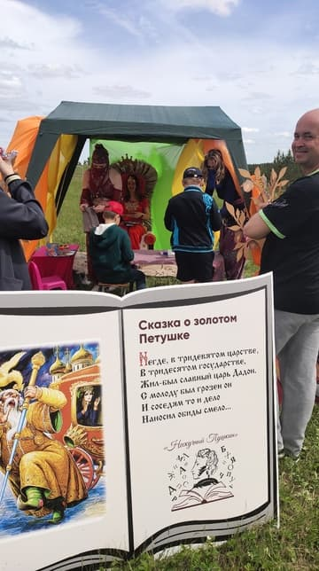
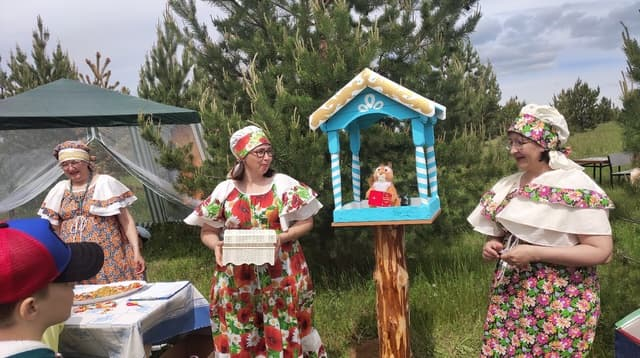
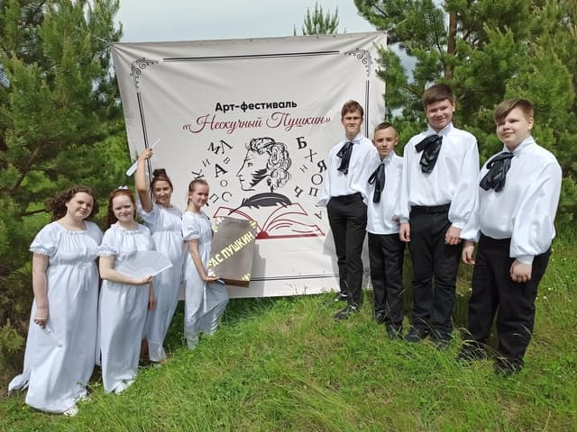
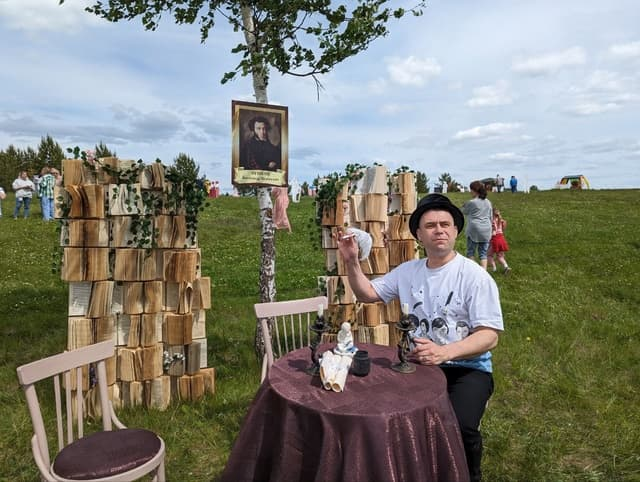
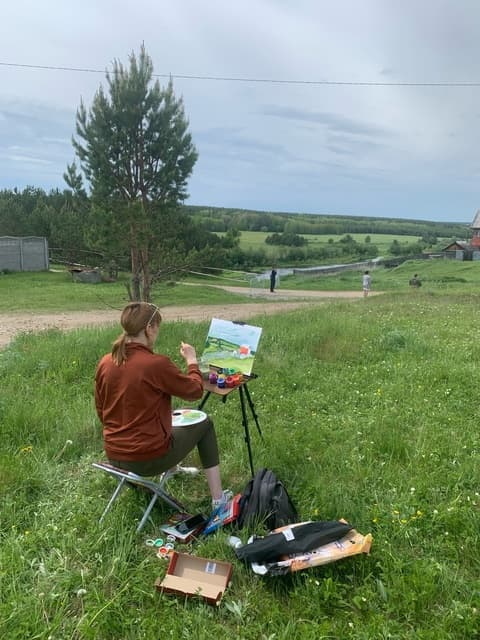
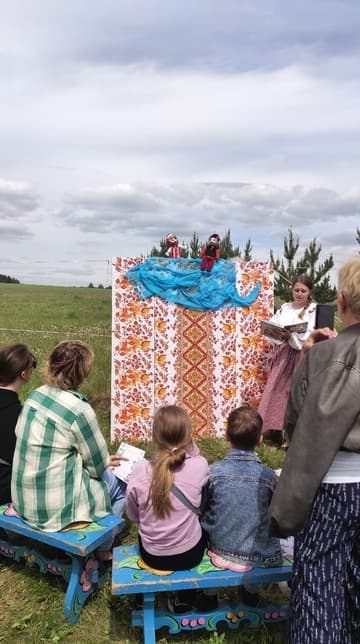

Проект «Книжная деревня»
- Деревня Ощепково Режевского района становится центром культурной жизни благодаря установке пилотного мобильного читального зала «Книжная деревня». Этот проект призван создать новое культурно-информационное пространство, где книги и творчество встречаются, формируя комфортные условия для чтения и общения между издателями и читателями. Кроме того, он способствует увеличению потока туристов в наш округ и повышению числа читающего населения.
- Идею проекта предложила директор ООО «Лазурь» Т.А. Деева, которая видит в этом инновационную площадку, способствующую развитию малого бизнеса и привлечению туристов. Выбор места для реализации проекта не случаен: живописное расположение Ощепково на берегу реки привлекает внимание туристов своими природными красотами и достопримечательностями. Местные жители называют эти зеленые просторы «маленькой Швейцарией».
- Инициативные работники сельских учреждений культуры с энтузиазмом подхватили идею и начали воплощение проекта. Совместная работа специалистов клубной и библиотечной систем, Надежды Маньковой от ООО «Лазурь» и работников Режевского исторического музея привела к масштабному переформатированию клуба в д. Ощепково. Одно из помещений преобразилось в традиционную русскую горницу, где лавки, вязаные коврики и глиняная посуда создают атмосферу народного быта.
- «Книжная деревня» становится пространством, где проходят творческие встречи, мастер-классы, праздники и игры. Для желающих посетить это уникальное место разработаны культурные тематические программы, которые пользуются большим спросом. Туристы приезжают организованными группами, и налажено сотрудничество с туристическими фирмами.
- За время реализации проекта проведено четыре программы: «По щучьему велению» (по мотивам русских народных сказок), «Сын полка» (по мотивам одноименной повести В.П. Катаева), «Путешествие в Лукоморье» (по произведениям А.С. Пушкина) и «Тайна малахитовой шкатулки» (по сказам П.П. Бажова). Каждое мероприятие имеет свою «изюминку», которая по достоинству оценивается участниками проекта.
- Летом этого года в рамках проекта «Книжная деревня» впервые прошел арт-фестиваль «Нескучный Пушкин». Посетители смогли окунуться в атмосферу творчества любимого писателя. Гостям фестиваля была предложена разнообразная программа: семейный квест «Там на неведомых дорожках», театральная зарисовка «Что за прелесть эти сказки…», поэтический микрофон «Читаем Пушкина», а также презентация книги молодого уральского автора Даньки Вишневской «Вечное лето 2.0». В будущем планируется привлечение предпринимателей с выставкой-продажей книжной продукции, чтобы сделать фестиваль традиционным и проводить его ежегодно в день рождения А.С. Пушкина.
- В рамках проекта три места в деревне Ощепково будут преобразованы в бесплатные читальные залы, оборудованные удобными креслами и скамейками для создания идеальной среды для чтения и отдыха. Каждая из трех локаций будет вдохновлена различными книжными жанрами. Въезд в д. Ощепково будет украшен указателем в виде развернутой книги. Экскурсия по живописным местам деревни, а также возможность отправки заполненных от руки тематических открыток близким или знакомым почтой России сделают проект еще более интересным.
- Таким образом, в результате творческого союза креативных и неравнодушных людей — сотрудников Типографии «Лазурь», специалистов сферы культуры и жителей д. Ощепково, с поддержкой администрации Режевского городского округа, родилась новая форма организации досуга. «Книжная деревня» — это пространство, где рождаются идеи, и царит хорошее настроение. Это лишь начало пути, впереди нас ждут еще много интересных событий!







План мероприятий на 2025 год в рамках реализации проекта «Книжная деревня» д. Ощепково Режевского городского округа
| № | Название мероприятия | Дата, время проведения |
| 1 | Программа «Вечера на хуторе» к 215 -летию со дня рождения Н.В. Гоголя (0+) | 26 января 2025 года 10:00 12:30 15:00 |
| 2 | Программа «Вечера на хуторе» к 215-летию со дня рождения Н.В. Гоголя (0+) | 16 февраля 2025 года 10:00 12:30 15:00 |
| 3 | Программа «Сын полка» к 80-летию Победы в Великой Отечественной войне. (0+) | 30 марта 2025 года 10:00 12:30 15:00 |
| 4 | Программа «Сын полка» к 80-летию Победы в Великой Отечественной войне. (0+) | 27 апреля 2025 года 10:00 12:30 15:00 |
| 5 | Программа «Сын полка» к 80-летию Победы в Великой Отечественной войне. (0+) | 25 мая 2025 года 10:00 12:30 15:00 |
| 6 | Арт-фестиваль «Нескучный Пушкин» (0+) | 7 июня 2025 года 12.00 |
| 7 | Программа «В гостях у сказки» (0+) | 29 июня 2025 года 10:00 12:30 15:00 |
| 8 | Программа «В гостях у сказки» (0+) | 27 июля 2025 года 0:00 12:30 15:00 |
| 9 | Программа «В гостях у сказки» (0+) | 31 августа 2025 года 10:00 12:30 15:00 |
| 10 | Программа «Страна чудес Андерсена» к 220-летию со дня рождения Г. Х. Андерсена (0+) | 28 сентября 2025 года 10:00 12:30 15:00 |
| 11 | Программа «Страна чудес Андерсена» к 220-летию со дня рождения Г. Х. Андерсена (0+) | 26 октября 2025 года 10:00 12:30 15:00 |
| 12 | Программа «Страна чудес Андерсена» к 220-летию со дня рождения Г. Х. Андерсена (0+) | 30 ноября 2025 года 10:00 12:30 15:00 |
| 13 | Программа «Загадки Конька – Горбунка», к 210-летию со дня рождения П.П. Ершова (0+) | 28 декабря 2025 года 10:00 12:30 15:00 |
| 14 | Программа «Загадки Конька – Горбунка», к 210-летию со дня рождения П.П. Ершова (0+) | 25 января 2026 года 10:00 12:30 15:00 |
| 15 | Программа «Загадки Конька – Горбунка», к 210-летию со дня рождения П.П. Ершова (0+) | 15 февраля 2026 года 10:00 12:30 15:00 |